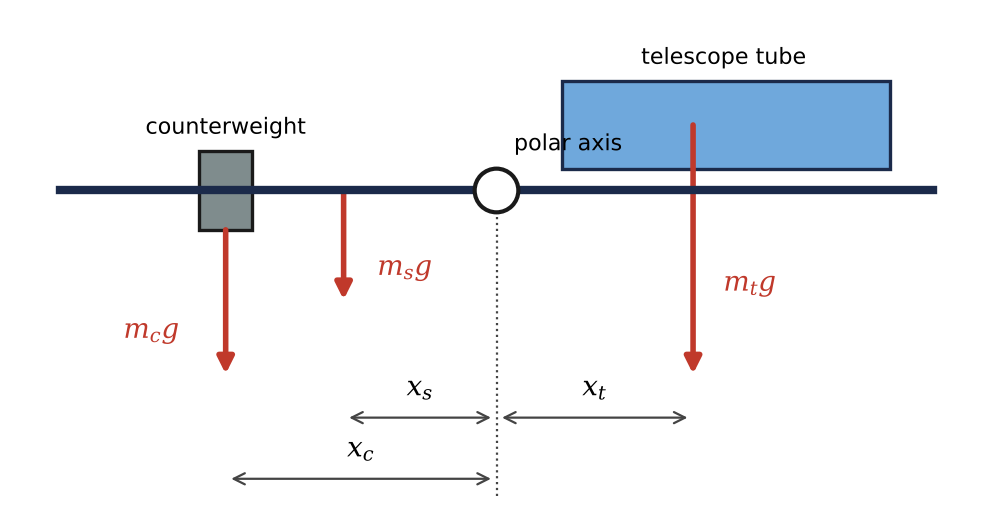
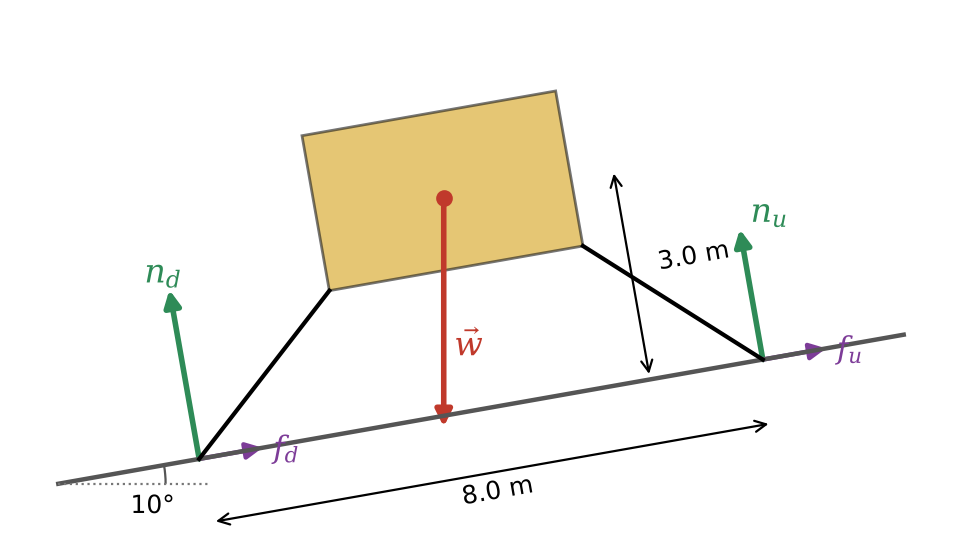
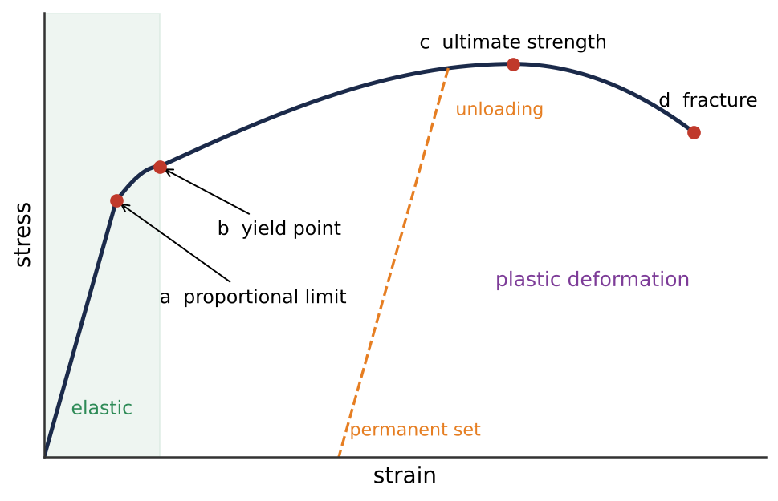

⚖️What you will learn
By the end of this module, you can:
- State and apply the two conditions for equilibrium of an extended body.
- Locate the center of gravity of a composite object, such as a telescope with its counterweight, and decide whether a lander will tip.
- Solve planar rigid-body equilibrium problems with hinges, cables and slopes, choosing a smart reference point for torques.
- Use Young's, bulk and shear moduli to calculate stresses, strains and deformations.
- Read a stress-strain curve and estimate safety factors and the maximum height of mountains on different worlds.
11.1Conditions for Equilibrium
A body is in equilibrium when its center of mass does not accelerate and it does not start to rotate. If it is also at rest, we call it static equilibrium: the state engineers design for in telescopes, radio dishes and lunar landers.
The first condition is that the vector sum of the external forces is zero, \(\sum \vec{F} = 0\). This keeps the center of mass from accelerating, but it is not enough. Two thrusters on a space station truss pushing with equal and opposite forces along different lines form a couple: the net force is zero, yet the truss starts to spin.
So we also need the second condition: the net external torque about any point is zero, \(\sum \vec{\tau} = 0\), with \(\vec{\tau} = \vec{r}\times\vec{F}\). When all forces lie in one plane this becomes a single equation: counterclockwise torques balance clockwise torques, each of size \(\tau = Fl\), where \(l\) is the lever arm.
A very useful fact: if \(\sum\vec{F}=0\), the net torque is the same about every point. So you may pick the reference point freely, and the professional trick is to choose a point through which an unknown force acts, so that force drops out of the torque equation. In two dimensions you have three equations (\(\sum F_x=0\), \(\sum F_y=0\), \(\sum\tau_z=0\)), so you can find at most three unknowns. Problems with more unknowns are called statically indeterminate.
11.2Center of Gravity
The weight of an extended body is really the sum of tiny forces on all its pieces. The center of gravity (cg) is the point where we may pretend the total weight acts when computing torques. If \(\vec{g}\) is the same everywhere on the body, the cg coincides with the center of mass:
\[ \vec{r}_{cm} = \frac{\sum m_i \vec{r}_i}{\sum m_i} \]Balancing a telescope. On a German equatorial mount, the tube sits on one side of the polar axis and a counterweight slides along a shaft on the other. Balance means the combined cg lies on the axis: \(m_t x_t + m_s x_s + m_c x_c = 0\). Then gravity exerts no torque and the drive motor only fights friction.
When g is not uniform. Gravity weakens as \(1/r^2\), so the cg of a tall tower lies slightly below its cm. For a 1 km tower the shift is only about 2.6 cm (\(\approx H^2/6R_\oplus\)). For a moon close to a planet, however, the near side is pulled much harder than the far side: this differential pull is the tidal force that locks the Moon's face toward us and heats Io.
Stability. A body resting on a surface is stable as long as the vertical line through its cg passes through its base of support. Lander designers keep the cg low and the legs wide for this reason.

11.3Solving Rigid-Body Equilibrium Problems
Solving an equilibrium problem is mostly careful bookkeeping, and the key step is a correct free-body diagram showing every external force at the point where it acts.
- A frictionless hinge can push or pull in any direction: give it two unknown components \(H_x\) and \(H_y\).
- A cable can only pull along its length: one unknown, the tension \(T\).
- A surface exerts a normal force \(n\) and, if rough, a friction force \(f\).
- Use the local gravity: \(1.62\ \text{m/s}^2\) on the Moon, \(3.71\ \text{m/s}^2\) on Mars.
For a receiver boom hinged to a tower and held by a diagonal cable, taking torques about the hinge eliminates both hinge components at once and gives \(T\) directly; the two force equations then give \(H_x\) and \(H_y\).
Landers on slopes. On a slope of angle \(\theta\), use axes along and perpendicular to the surface. The downhill legs carry more of the load, and the lander is on the verge of tipping when the uphill normal force drops to zero, i.e. when the vertical through the cg passes through the downhill foot. For feet a distance \(d\) apart and a cg a height \(h\) above the slope this happens at \(\tan\theta = (d/2)/h\). Sliding is a separate failure mode, occurring when \(\tan\theta > \mu_s\).
Always check your answer by computing torques about a second point.

11.4Stress, Strain, and Elastic Moduli
No real body is perfectly rigid. Stress (force per unit area, in pascals) measures what causes a deformation; strain (dimensionless) measures the fractional deformation. For small deformations they are proportional, a generalized Hooke's law: stress / strain = elastic modulus. The modulus is a property of the material, not of the object's shape.
- Tension or compression (a crane cable, a lander leg): stress \(F_\perp/A\), strain \(\Delta l/l_0\), Young's modulus \(Y\). Steel has \(Y = 2.0\times10^{11}\ \text{Pa}\).
- Bulk stress (a body squeezed from all sides, e.g. deep in Europa's ocean): stress \(\Delta p\), strain \(\Delta V/V_0\), bulk modulus \(B\). Liquid water has \(B = 2.2\times10^9\ \text{Pa}\).
- Shear (the adhesive pads holding a mirror when the telescope points at the horizon): stress \(F_\parallel/A\), strain \(x/h\), shear modulus \(S\). Fluids have \(S=0\), which is why seismic shear waves cannot cross Earth's liquid outer core.
The space elevator. A cable hanging under its own weight has a stress \(\rho g L\) at the top, so a material's breaking length is \(L_b = \sigma_{break}/(\rho g)\). An Earth space elevator needs roughly 5000 km; steel falls short by a factor of almost a thousand.
11.5Elasticity and Plasticity
Hooke's law holds only for small deformations. A stress-strain curve shows what happens beyond. Up to the proportional limit the curve is a straight line whose slope is \(Y\). Up to the yield point the deformation is still elastic (reversible). Beyond it the material deforms plastically: atoms slip and the change is permanent (a permanent set). The highest stress is the ultimate tensile strength, after which the specimen necks and fractures.
Ductile materials (aluminum, titanium, steel) deform a lot before breaking; brittle ones (glass, ceramics, cold rock) fracture almost as soon as they leave the elastic region.
Spacecraft must survive launch accelerations of several \(g\), so engineers compare the maximum stress, with load \(F = m(g+a)\), to the yield strength and require a safety factor of about 1.25 to 2. Strength per unit density is the figure of merit, which is why spacecraft use aluminum, titanium and carbon fiber.
Mountains. A mountain of height \(h\) presses on its base with stress \(\approx\rho g h\). When that exceeds the rock's strength, the base flows, so \(h_{max}\approx\sigma_{max}/(\rho g)\). Weaker gravity allows taller mountains: Olympus Mons on Mars rises about 22 km, nearly three times Everest. The same idea explains why large bodies are round while small asteroids can be potato-shaped.

★Key takeaways
- Equilibrium requires both zero net force (no acceleration of the center of mass) and zero net torque about any point (no angular acceleration).
- In a uniform gravitational field the center of gravity is the center of mass; nonuniform gravity across a body gives rise to tidal forces.
- Take torques about a point where unknown forces act so they drop out; hinges have two unknown components, cables one.
- A body is stable while the vertical through its cg falls inside its base of support; a lander on a slope tips when \(\tan\theta = (d/2)/h\).
- Stress / strain = elastic modulus: Young's \(Y\) for length changes, bulk \(B\) for volume changes, shear \(S\) for sideways distortion.
- Beyond the yield point materials deform permanently; maximum mountain height scales as \(\sigma_{max}/(\rho g)\), so low-gravity worlds have taller mountains.
⟡Worked examples
Each example follows the book's method: Identify and set up, Execute, Evaluate.
A 14.0 kg telescope tube on a German equatorial mount has its center of gravity 0.45 m from the polar axis. The counterweight shaft has a mass of 2.0 kg, and its center is 0.35 m from the axis on the side opposite the telescope. Where must a 9.0 kg counterweight be clamped for perfect balance?
Show solution (try it first)
Identify and set up: Balance means the center of gravity of the whole rotating assembly lies on the polar axis. Put the origin on the axis with the telescope side positive: \(x_t = +0.45\ \text{m}\), \(x_s = -0.35\ \text{m}\). The unknown is \(x_c\). Gravity is uniform over the mount, so cg = cm.
Execute: Setting \(x_{cm}=0\):
\[ m_t x_t + m_s x_s + m_c x_c = 0 \;\Rightarrow\; x_c = -\frac{m_t x_t + m_s x_s}{m_c} = -\frac{(14.0)(0.45) + (2.0)(-0.35)}{9.0}\ \text{m} = -\frac{6.30-0.70}{9.0}\ \text{m} = -0.62\ \text{m} \]Evaluate: The counterweight sits 0.62 m from the axis on the side opposite the tube. Being lighter than the tube, it must be farther out, like a child balancing an adult on a seesaw. Without the shaft's help it would need to be at 0.70 m. Adding a heavy camera to the tube increases \(m_t x_t\), so the counterweight must slide farther out.
A 7300 kg lander, similar to an Apollo lunar module, rests on a 10.0\(^\circ\) slope on the Moon (\(g = 1.62\ \text{m/s}^2\)). Its footpads are 8.0 m apart along the slope and its cg is 3.0 m above the slope, midway between the feet. Find (a) the normal force on the uphill and downhill feet, (b) the total friction force needed, and (c) the slope angle at which it would tip over.
Show solution (try it first)
Identify and set up: The lander is in static equilibrium. Use axes along (uphill, \(x\)) and perpendicular (\(y\)) to the slope. The weight \(w = mg = (7300)(1.62) = 1.18\times10^4\ \text{N}\) acts at the cg, 4.0 m uphill of and 3.0 m above the downhill foot. Taking torques about the downhill foot removes \(n_d\) and both friction forces.
Execute: (a) Counterclockwise positive:
\[ n_u(8.0\ \text{m}) - w\cos\theta\,(4.0\ \text{m}) + w\sin\theta\,(3.0\ \text{m}) = 0 \] \[ n_u = w\left[\tfrac{1}{2}\cos\theta - \tfrac{3}{8}\sin\theta\right] = (11\,826\ \text{N})(0.4924-0.0651) = 5.05\times10^3\ \text{N} \] \[ n_d = w\cos\theta - n_u = 11\,646\ \text{N} - 5053\ \text{N} = 6.59\times10^3\ \text{N} \](b) Along the slope: \(f_u + f_d = w\sin\theta = (11\,826)(0.1736) = 2.05\times10^3\ \text{N}\), which needs \(\mu_s \ge \tan 10^\circ = 0.176\).
(c) Tipping starts when \(n_u = 0\): \(\tan\theta = (4.0)/(3.0)\), so \(\theta_{tip} = 53.1^\circ\).
Evaluate: The downhill feet carry 57% of the load. For \(\theta\to0\) the formula gives \(n_u = n_d = w/2\), as it should. The tipping angle is far steeper than any landing site; a boulder under a footpad or sideways motion at touchdown is a bigger danger.
Take the compressive strength of crustal rock to be \(2.0\times10^8\ \text{Pa}\) and its density 2700 kg/m\(^3\). Estimate the maximum height of a mountain on Earth (\(9.80\ \text{m/s}^2\)), Mars (\(3.71\ \text{m/s}^2\)) and the Moon (\(1.62\ \text{m/s}^2\)).
Show solution (try it first)
Identify and set up: The base of a mountain yields when the compressive stress \(\rho g h\) exceeds the rock's strength, so \(h_{max}\approx\sigma_{max}/(\rho g)\).
Execute: For Earth:
\[ h_{max} \approx \frac{2.0\times10^8\ \text{Pa}}{(2700\ \text{kg/m}^3)(9.80\ \text{m/s}^2)} = 7.6\times10^3\ \text{m} = 7.6\ \text{km} \]Since \(h_{max}\propto 1/g\): \(h_{Mars}\approx(7.56\ \text{km})(9.80/3.71) = 20\ \text{km}\) and \(h_{Moon}\approx(7.56\ \text{km})(9.80/1.62) = 46\ \text{km}\).
Evaluate: A remarkably good estimate: Everest is 8.8 km and Olympus Mons about 22 km. The Moon's peaks are lower than the limit because it lacks the volcanism and tectonics that build mountains; the formula is a ceiling, not a guarantee.
✍️Activity 11: Keeping the Observatory Steady
Work through the eight questions below, then answer the short reflection. Use \(g = 9.80\ \text{m/s}^2\) on Earth unless another world is named. Enter plain numbers in the requested unit; answers within 2% are accepted. Draw a free-body diagram for every equilibrium problem before you start.
8 graded items, 1 point each, plus a short reflection. For each problem, write your solution in the solution box, then type the final answer as a plain number (keep 3 significant figures; small rounding differences are accepted). You may submit up to 2 times; every attempt is recorded. Right after submitting you will see your score and which items are correct or wrong; after your last attempt you will also see the correct answers.
Use these values unless an item gives its own: \(g_\text{Earth} = 9.80\ \text{m/s}^2\), \(g_\text{Moon} = 1.62\ \text{m/s}^2\), \(g_\text{Mars} = 3.71\ \text{m/s}^2\), \(G = 6.674\times10^{-11}\ \text{N·m}^2/\text{kg}^2\), \(M_\text{Earth} = 5.972\times10^{24}\ \text{kg}\), \(R_\text{Earth} = 6371\ \text{km}\).